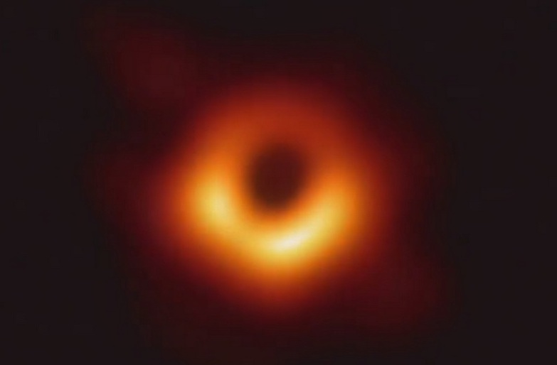

A blanket of stars overwhelmed the sky, scattering far past the horizon. Appearing white and twinkly, they acted as a foil to the explosive trail of the Milky Way that lead to the peak of a distant mountain. This was the average night’s view from the deck of Rachel’s childhood home in “the Middle of Nowhere, Colorado.”
“I probably just took it for granted,” Rachel—now Dr. Bezanson— reflects. I am interviewing Dr. Bezanson, observational astronomer at the University of Pittsburgh, over Zoom—she has just woken up while I’m across the world, already hours into the night. I peer out my own balcony doors, staring into glaring lights permeating through thousands of windows, bespeckling a blank navy umbrella above; these are the stars of Singapore’s skies.
I grew up thinking pictures of real starry skies were fabricated because I simply couldn’t imagine it; it’s difficult to comprehend that Rachel had grown up able to take those pictures every night. It evokes a sense of nostalgia for something I had never experienced.
“It wasn’t like I always knew I was going to be an astronomer,” Rachel continues. While night-sky visibility has significantly decreased over the years, seeing the Milky Way every night wasn’t something she thought about very much while growing up, although she did love the view. “Like, if you’re used to seeing streetlights, you just get used to streetlights.” In college, pre-med Rachel decided to take an introductory astronomy for non-majors course on a whim . . . and she fell in love. Moving to Arizona for a semester to solely take astronomy classes, her path unfolded to eventually lead her through a postdoc to an assistant professor position.
Along the way, she excitedly mentions, she got to meet many telescopes. “You name it, I’ve probably tried to figure out a way to use it… I’ve used some of the biggest telescopes in the world.” I, of course, could not name many telescopes, but I fully believe her claim. I ask what her favorite telescope was, expecting a justification describing the optimal specs, lens and display for the perfect view. Instead, Rachel takes me on a quest through the Atacama Desert. On the coast of Chile lies the Very Large Telescope, which does, in fact, boast beautiful images of celestial wonders. The journey to get there, however, is the highlight. Two flights and a three-hour bus ride leads you to the Middle of Nowhere, Chile, where you can find a “half-buried residential complex thing” that’s straight out of a James Bond movie (literally!). While it’s all sand above surface, when you go underground, “you’re basically in this indoor rain forest with a pool.” Up the mountain lies four “incredible instruments,” blending the entire beautiful experience with knowledge…and a good amount of “strange” and “weird” that makes this place unique.
Wanting to learn more about her telescopic research, I ask Rachel if she could share one fact or image with the general population, what would it be?
“The supermassive black hole.”

Image of the black hole by Dr. Bezanson
The coolest thing about astronomy is its “ridiculous scales of sizes…that essentially force you to think outside the scope of anything that you can really comprehend.” Contrasting studies within a molecular lab to her studies of massive galaxies, Rachel details the factors of ten that encapsulate the universe, scales that are difficult to even fathom.
While there are certainly more beautiful pictures to choose (the ones that “get put on leggings and whatever”) this breakthrough image of a black hole embodies the “deep understanding and intuition” that motivates Rachel’s own study of galaxies. It doesn’t look like much, but when you know that you are seeing the effects of gravity so intense that light is jailed within it, it is invaluable. And that visible light is a snapshot from history that has traveled for millions of years.
This image epitomizes Dr. Bezanson’s passion and intellectual drive to astronomy that is clear through her descriptions of the universe, appealing to both scientists and the public. In this fifteen-minute glimpse into her world (and beyond!), my concept of the beauty of our universe has changed; rather than looking to a starry sky for a pretty picture, I hope to internalize the magnitude, science and journey of everything behind a simple image.